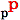

Propiedades de los Componentes
Cuando un componente es seleccionado las propiedades del componente pueden ser modificadas
presionando el boton de propiedades 
Cuando se crea un nuevo componente este esta seleccionado por defecto.
Para seleccionar otro componente solo haga click con el mouse encima de el.
Las propiedades pueden se cambiadas dependiendo del tipo de compoente que esta siendo editado.
Normalmente esto incluye:
- El color
- El Brillo
- La textura (excepto para texto en 2D)
- La escala en x, y, z
- La fuente de los componentes de texto en 2D y 3D